Selected Works
Portfolio

Artists
Producer, Engineer, Music Supervisor, Songwriter, Arranger, and Performer
Chris Colatos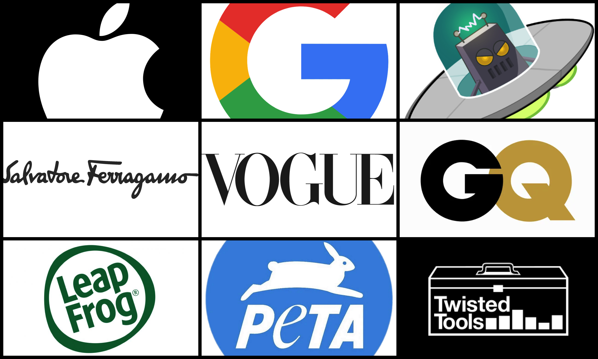
Companies
Producer, Engineer, Music Supervisor, Songwriter, Arranger, and Performer
Chris Colatos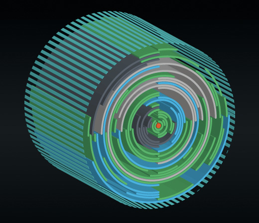
Twisted Tools
Drum Programming, Sound Design, and Composition for Twisted Tools Instruments
Chris Colatos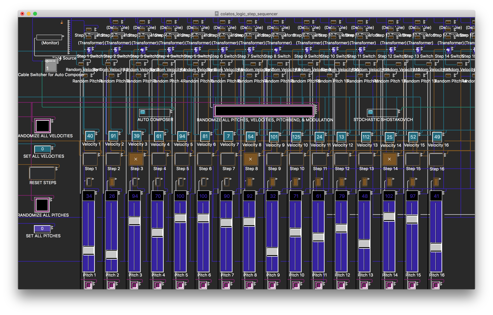
St0cHastAk0v1Ch
Programmable and algorithmic auto-composing step sequencer developed in Logic Pro's MIDI Environment. Video features Mike Keneally on guitar.
Chris Colatos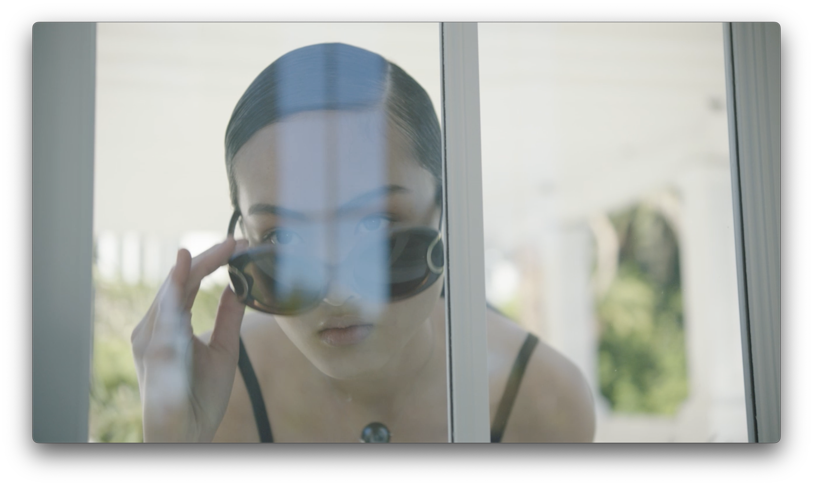
Salvatore Ferragamo
Composer, Lo Splendore Della Vita (>1M views)
Chris Colatos
Katy Perry
Algorithmically Produced Composition for Katy Perry and Vogue Magazine (Italy)
Chris Colatos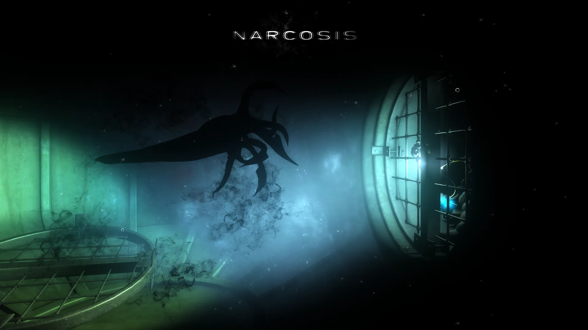
Narcosis
Multiplatform/VR, Audio
Chris Colatos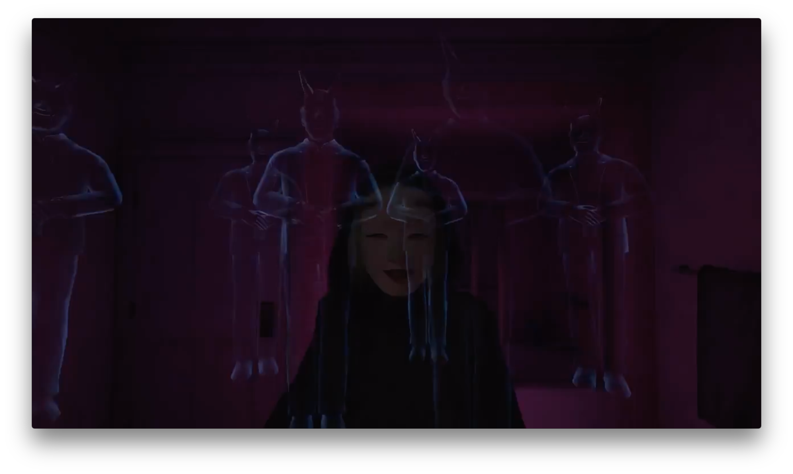
Dead Secret Circle
Multiplatform/VR, Recording Engineer, Sound Designer, VO Editor, Dialog Processing / Mastering
Chris Colatos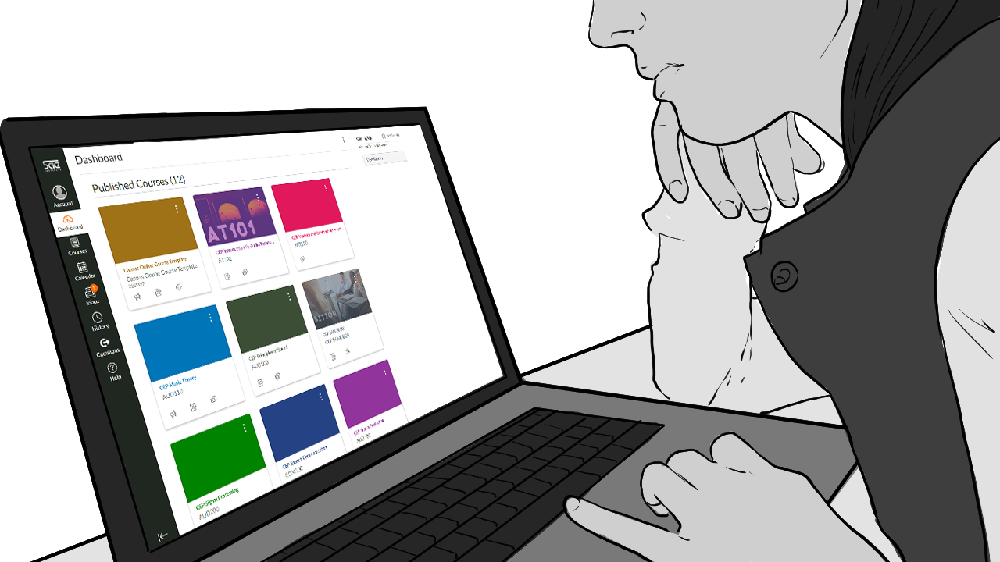
Learning Experience Design
Designed and developed creative arts higher education teaching and active learning experiences in multiple modalities for 7 North American colleges
Chris Colatos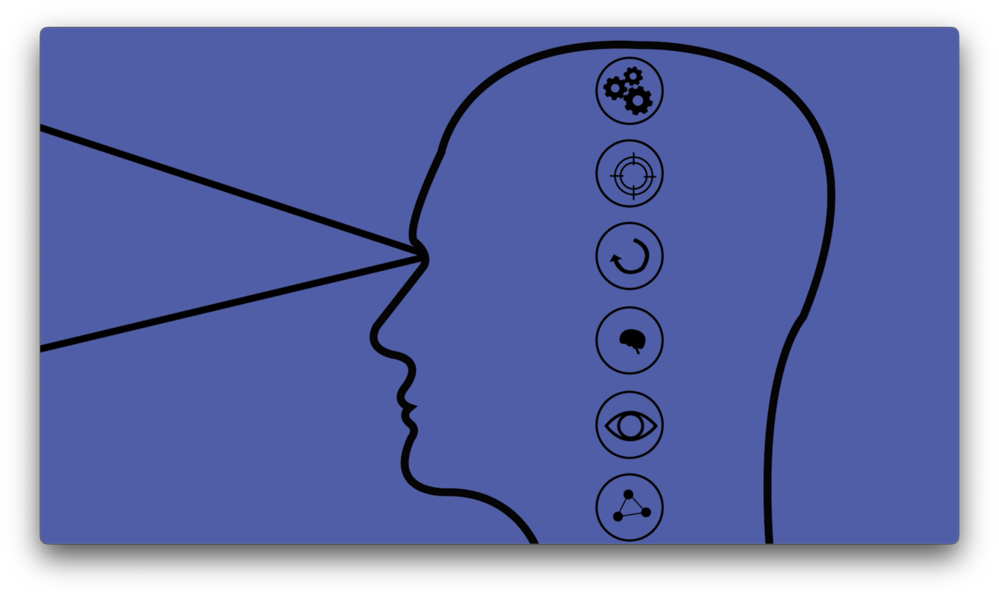
Adaptive Learning Design Implications
Effects of Multimedia on Learning Efficacy and Cognitive Load. This research was conducted and authored by Chris Colatos as part of a collaborative study between The University of Edinburgh and Columbia University, supervised by preeminent scholars in the field, Professors Ryan S. Baker (Penn GSE) and Dragan Gašević (Monash University)
Research
Sign And Speak
Interactive Audio student project — Sign And Speak is a prototype accessibility tool that converts American Sign Language into spoken word. Creators — Jeff Andrews, Michael Carter — #AlgorithmicProcessing #GestureRecognition #AssistiveTech #HCI #RealTimeProcessing #DigitalSignalProcessing #MaxMSP #CreativeCoding #InteractiveAudio #ComputationalLinguistics #SensorFusion #WearableTech #Arduino #EmbeddedSystems #HumanCenteredDesign #AccessibilityTech #TangibleInterfaces #DataMapping
Student Work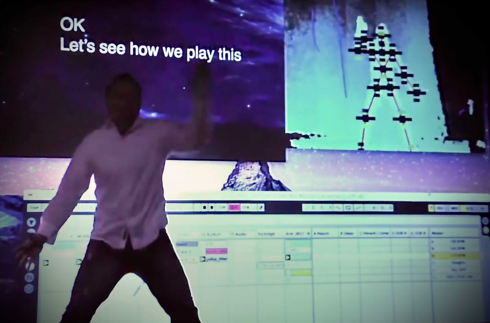
Interactive Audio Student Work
Ex'pression College Interactive Audio BSc Program Student Work
Student Work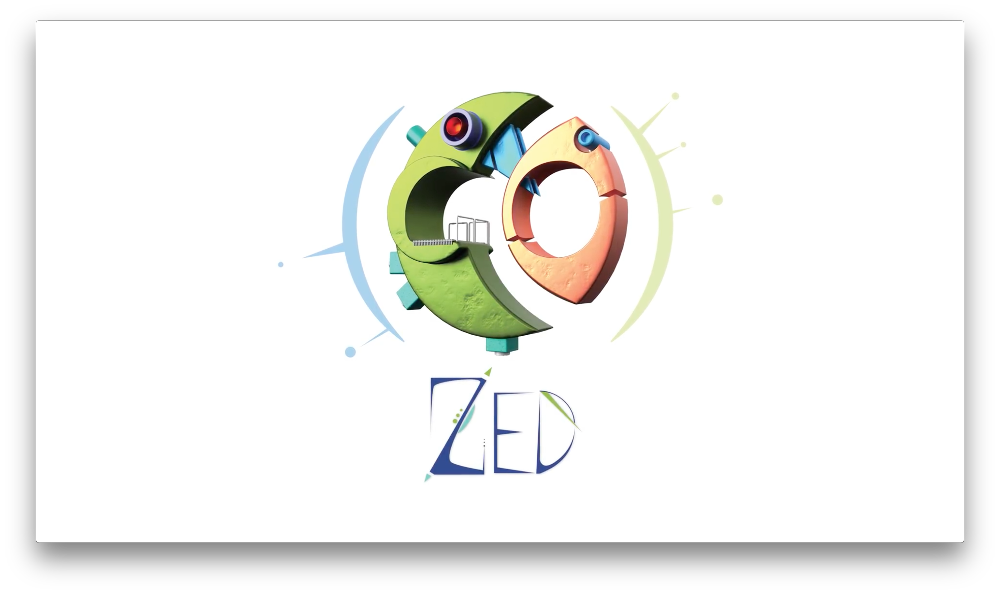
ZED
Multiplatform/VR, Recording Engineer, Sound Designer, VO Editor, Dialog Processing / Mastering
Chris Colatos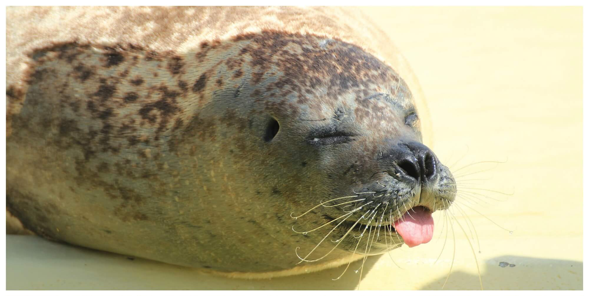
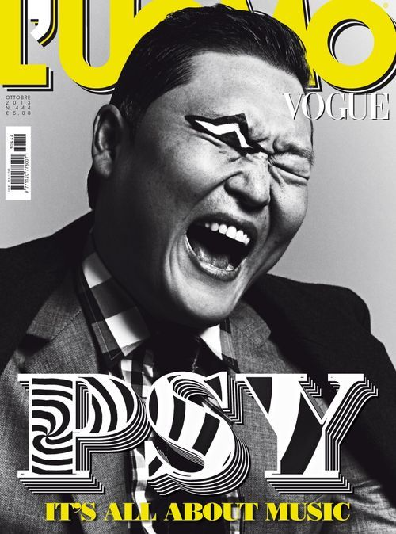
PSY
Composer for PSY and Vogue Magazine (Italy) Feature
Chris Colatos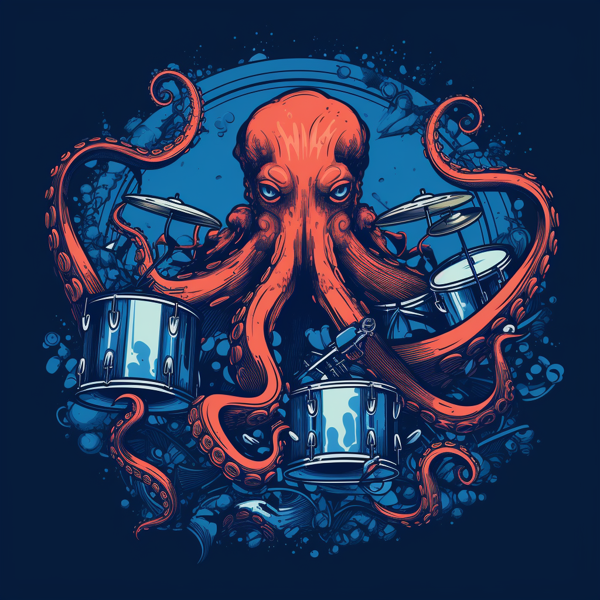
c2 loops
Mini retro algorithmically produced drum-breaks loop library; circa 1999-2000
Chris Colatos
Nightingale
Inspired by synthesized wind chimes, Nightingale is an algorithmic sonification of Plato's Phaedrus, transforming dialogue into sound and musical traits
Chris Colatos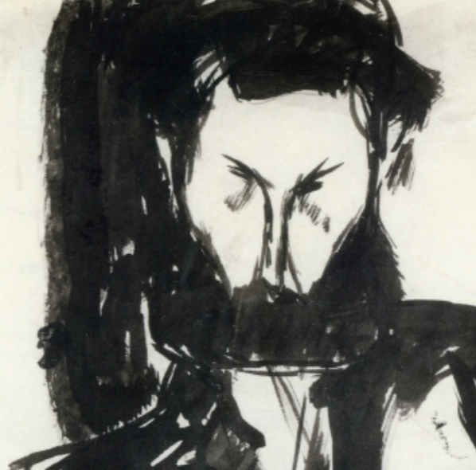
Modigliani Bridge
Bridge section showcasing algorithmically produced composition
Chris Colatos